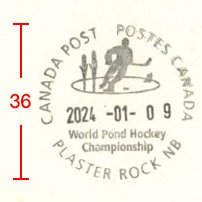

Plaster Rock PO pictorial cancel
World Pond Hockey Championship
- Status
- Active
- Run dates
- ? to present
- Design
- "World Pond Hockey Championship"; pond hockey
- Ink colour
- Black
- Designer
- Unknown
- Post office
- Plaster Rock PO
62 Orange Street
Plaster Rock, NB
E7G 1W0 - Subjects
- sport, hockey, hockey player
Collect it by mail. Send your stamped covers, with a stamped return envelope, to the post office address above. How to collect pictorial cancels by mail · en français
 Grand Falls Grand-Sault POFalls and Gorge / Chute et Gorge
Grand Falls Grand-Sault POFalls and Gorge / Chute et Gorge Upper Kent POOgging (lumbering), trees, river and fishes
Upper Kent POOgging (lumbering), trees, river and fishes Bath STN MainBathtub
Bath STN MainBathtub